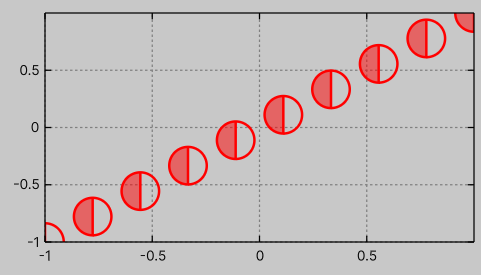

Custom point style
As described in Plot types/Plot with points, the package provides several built-in markers for point representation.
However, it is relatively easy to define a custom marker shape.
In this example, we will show how to add a half-circle marker.
First, you need to implement the IPointStyle interface.
This interface has a single method to implement: Draw(float2, Painter2D, float).
public class HalfCircleStyle : IPointStyle
{
public void Draw(float2 localPosition, Painter2D painter, float pointSize)
{
var o = pointSize;
var q = localPosition;
painter.BeginPath();
painter.Arc(q, o, 90, 270);
painter.Fill();
painter.ClosePath();
painter.Arc(q, o, 270, 90);
painter.Stroke();
}
}
To override a given style, you can replace one of the styles assigned to the plot by modifying plot.PointStyles[i].
var plot = graph.PlotWithPoints(Sequence.Uniform(x => x, samples: 10), theme: new()
{
PointSize= 15,
PointWidth = 2
});
plot.PointStyles[1] = new HalfCircleStyle();
Alternatively, you can modify the static list in DefaultPointStyles to override this marker type globally for newly created graphs.
DefaultPointStyles.Collection[1] = new HalfCircleStyle();
